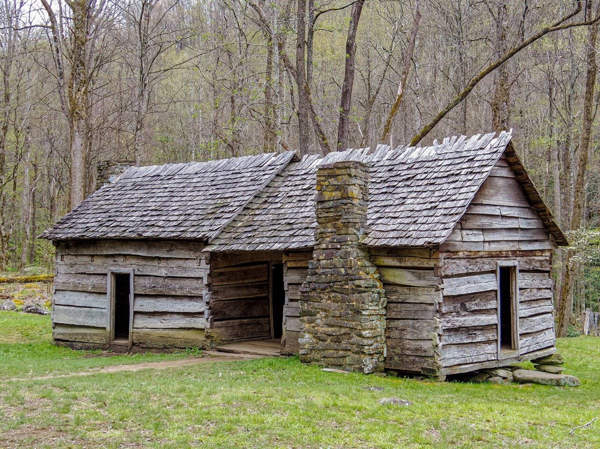
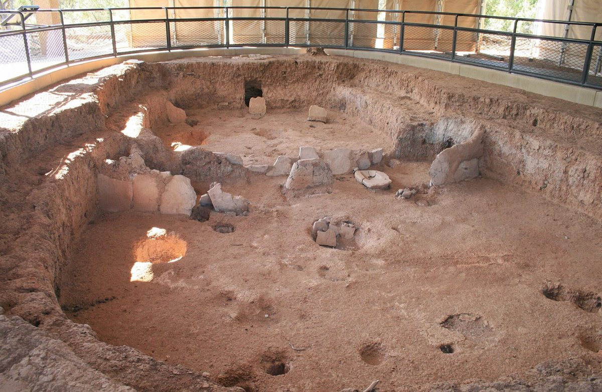
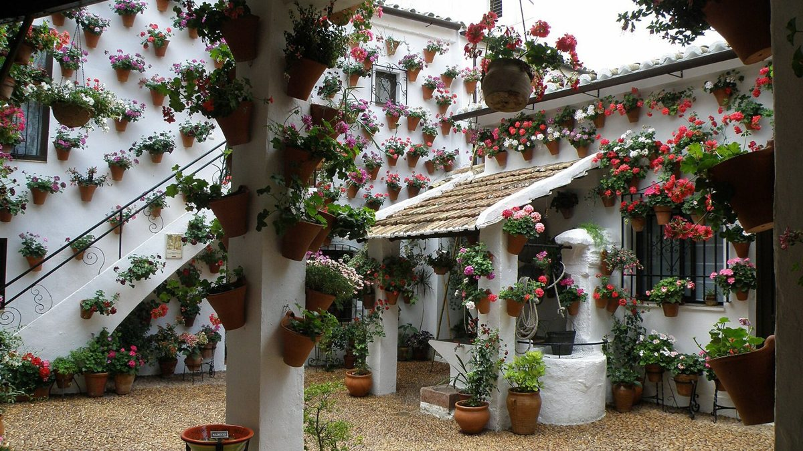
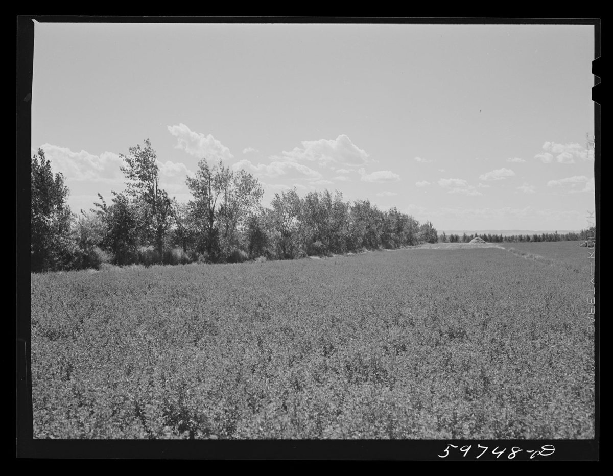

2.1 How air moves Two engines: the wind pushes, and warm air rises
Stand in the open doorway of a warm room on a cold evening, and hold a candle up near the top of the door. The flame leans out, toward the cold. Now lower it to the floor. The flame leans in. Somewhere about halfway up, it stands perfectly still. Without any wind at all, air is pouring out of the top of that doorway and in at the bottom.
Now go to a stuffy room on a breezy day and open one window. Very little happens. Open a second window on the far side of the room, and within a minute the air is moving and the room is fresh.
Those two moments show you the two engines that move air through every building: wind, which pushes, and warmth, which rises. This lesson is about how each one works, why they need openings in particular places, and how the best buildings put both to work at once.
How it works
Start with the wind. When wind meets a building, it piles up against the face it strikes and raises the pressure there. Then it tears away around the corners and over the roof, and it leaves lower pressure behind, on the far side and on the roof itself. Air always moves from higher pressure to lower. So a window on the windward side and a window on the leeward side make a path, and the air takes it. One window alone can only swap air in and out through the same hole, driven by gusts and warmth, so it does far less, and only near the window.
Two facts about wind-driven air surprise people. The first is that the flow grows only with the square root of the push. Double the pressure difference and you get about 1.4 times the air, not twice as much. The second is that when air passes through several openings in a row, the smallest one governs, like a kink in a garden hose. A big window facing the breeze does little if the air has to leave through a small one.
Now the second engine. Warm air is lighter than cool air. A room that is warmer than the outdoors holds a column of light air, and that column presses outward at the top and draws air inward at the bottom. Between the two lies a level where nothing moves. That's the candle standing still. The taller the warm column, and the warmer it is than outside, the harder it pulls, and again the flow grows with the square root.
How strong are these engines? Weaker than you'd think. A breeze of three metres a second makes a pressure difference across a building of about five pascals, which is about the weight of half a dozen sheets of paper lying flat on a table. A room three metres tall and twenty degrees warmer than outside makes about half of that. Warmth is the gentler engine, but it runs when there is no wind at all.
So there are two ways to place openings. For the wind, put them across the plan, on faces the wind treats differently. For warmth, put them low and high, with as much height between them as you can. The best buildings do both.
The best examples
The Roman architect Vitruvius treated wind as something a town has to plan around. His warning was the city of Mytilene, on the island of Lesbos: handsomely built, he said, but badly placed. The south wind made its people ill, the north-west wind set them coughing, and the north wind, which restored them, was too cold to stand about in. His advice was to turn the lines of the streets away from the directions the winds blow from, so that they strike the corners of the blocks and break up rather than roaring down the streets. It's an early written case of a town's layout being set by the air.
Florence Nightingale set down rules for hospital wards in her Notes on Hospitals, and they are a lesson in using both engines. Her wards were long and narrow, with windows in opposite walls no more than thirty feet apart, one window for every two beds. The windows ran from two or three feet above the floor to within a foot of the ceiling, in rooms fifteen or sixteen feet high. So the wind could cross the ward from side to side, and warm air could leave at the top of the tall windows while fresh air came in at the bottom. In 2010, researchers measured a former Nightingale ward at St Luke's Hospital in Bradford, in the north of England, empty at the time. With the windows open and a light breeze, the air was replaced three and a half to six and a half times an hour. With them shut, exposure at the beds to a tracer gas, standing in for airborne germs, rose about fourfold.
_-_btv1b6917672v.jpg){kind=link}
The humblest example may be in your own house. A tall sash window, opened a little at the top and a little at the bottom, uses both engines on its own: the breeze comes in, the warm air leaves over the top, and the room breathes even on a still day, as long as it's warmer inside than out.
Rules of thumb
One. Give the air a way out. Every inlet needs an outlet, on another face of the building or higher up.
Two. Put openings where the pressures differ: on opposite sides for the wind, and low and high for the warmth.
Three. The smallest opening sets the flow. Size the outlets, and the doors and grilles the air must pass through inside, as generously as the windows it comes in by.
Four. Know your winds. Local weather records show the prevailing directions season by season, and the breeze you want in summer often comes from a different side than the wind you want to keep out in winter.
Five. Use tall openings that open at the top and the bottom, so that one window can use both engines at once.
Where it fails
Both engines can stall at once. On a hot, still afternoon there's little wind, and the inside is barely warmer than the outside, so neither engine has much to push with. That's when shade, a ceiling fan and, where the nights are cool, heavy walls earn their keep. And a building that depends on open windows has to answer the reasons people close them: noise, dust, rain, insects and security. Solve those, with screens, louvres and openings placed out of reach, or the windows will stay shut.
Recap
To sum up. Air moves through buildings by two engines: the wind, which pushes from high pressure to low, and warmth, which rises and draws air in low and out high. Both work best with a separate way out, the flow grows only with the square root of the push, and the smallest opening sets the pace. Place openings across the plan for the wind and up and down for the warmth, and the building can breathe in most weather.
Check yourself
First question. You open one window in a stuffy room and nothing much happens. Why, and what should you open next?
One window can only swap air in and out through the same opening, so it does little. Open a second opening on the opposite side of the room, or one high up.
Second question. In a room that is warmer than outside, does the warm air leave at the top or the bottom?
At the top. Cooler air comes in at the bottom.
Third question. A room has a large window facing the wind and a small one on the far side. Which of them limits the airflow?
The small one. When air passes through openings in a row, the smallest one governs.
Sources and further reading
- Wind and buoyancy flow: MIT, CoolVent, Basics of natural ventilation; University of Sheffield, Science and Technology of Low Carbon Design, natural ventilation; CIBSE Journal CPD, January 2017. Pressures computed for this lesson.
- Vitruvius, On Architecture, book I, chapter 6, translated by J. Gwilt and by M. H. Morgan.
- F. Nightingale, Notes on Hospitals, third edition (1863).
- C. A. Gilkeson and colleagues, "Measurement of ventilation and airborne infection risk in large naturally ventilated hospital wards", Building and Environment 65 (2013).
- Sash windows and high and low openings: CIBSE, AM10, Natural ventilation in non-domestic buildings, as summarised in CIBSE Journal CPD.
- Further reading: G. Z. Brown and M. DeKay, Sun, Wind and Light; N. Lechner, Heating, Cooling, Lighting.
2.2 Cross-ventilation Opening a building to the breeze
It's a July afternoon in Mississippi, in the eighteen-fifties. The house is two log rooms under one roof, with an open passage between them, ten or fifteen feet wide, running straight through from front to back. That's where the family is: shelling peas, rocking, dozing, with the dog asleep on the boards. The rooms on either side are stuffy, but the passage is shaded by the roof and funnels whatever breeze there is right through the middle of the house. People called it a dogtrot, and for most of the summer the passage was the best room in the house.
The last lesson showed you that wind drives air from the side it strikes to the side it leaves. This lesson turns that into a plan. You'll learn how deep a room can be and still be ventilated from its windows, how big the openings should be, why moving air feels cooler even when it isn't, and what gets in the breeze's way.
How it works
The first question is depth. Air picks up heat and stale air as it crosses a room, and the stirring a single window makes only reaches so far. So there are three rules of thumb, and they are all measured in ceiling heights. With windows in one wall only, a room ventilates to a depth of about twice its ceiling height. If those windows open at both the top and the bottom, like a sash window, that stretches to about two and a half times. With windows in opposite walls, a room can be about five times its ceiling height deep and still be crossed by the breeze. With ceilings three metres high, that's about six metres, seven and a half metres, and fifteen metres.
The second question is size. Building codes set minimums. Where American codes let a room be ventilated by its windows, their openable area has to be at least four per cent of the floor area. In England, windows that swing wide open need about a twentieth of the floor area to clear the air of a room quickly. Those are floors, not targets. For cooling by the breeze you want much more. Openings on the windward and leeward sides of about the same size move the most air for the area you give them. A smaller inlet with a larger outlet speeds the air up where it comes in, which is useful where people sit.
The third question is what the breeze does for you. On a hot day, air moving across your skin carries heat away and helps your sweat evaporate, so you feel cooler although the air is no cooler at all. At half a metre a second, a gentle breeze you can just feel on your face, you feel two or three degrees cooler. Up to about a metre a second is pleasant in humid heat, though loose papers start to lift at about three-quarters of a metre a second. The standard that American engineers use for comfort allows moving air to offset up to about three degrees, as long as the people in the room can control it.
And the last question is the path. Every wall across the path of the breeze stops it. So cross-ventilated buildings are one room deep, or they give the air a way over and through their inner walls, with grilles above the doors and windows, and openings lined up across the house.
The best examples
The dogtrot house spread across the American South in the nineteenth century: two log rooms, called pens, a few paces apart under one roof, with the space between them left open at both ends. Some began as a single pen with the second added later; more often both were built at once. The passage was shade, breezeway, porch and workroom at once, and the idea survives in every house that runs an open breezeway through its middle.
Florence Nightingale's wards, from the last lesson, were cross-ventilated by rule. With windows in opposite walls no more than thirty feet apart, under ceilings fifteen or sixteen feet high, the breeze had no more than twice the ceiling height to cross, well inside the five-times rule.
You met the Malay house in the lesson on too much sun. Look at it again as a sieve for the breeze. It stands a metre or more above the ground, where the air moves more freely. Its walls are full of tall windows at the height of a seated person, with grilles above them that let air through even when the shutters are closed.
And a modern example: the Queen's Building at De Montfort University in Leicester, in England, finished in 1993. Its narrow wings are cross-ventilated through their windows, and only the deep parts of the building needed the help of chimneys, which is the next lesson.

{kind=link}
Rules of thumb
One. Keep the plan shallow. With windows on one side only, a room ventilates about twice its ceiling height deep, or two and a half times with windows that open top and bottom. With windows on opposite sides, it's about five times.
Two. Make the openings generous. Treat the code minimum of four or five per cent of the floor area as a floor, not a target, and give the windward and leeward sides openings of about the same size.
Three. Put the openings where the people are, at the height of someone sitting or lying down. Moving air cools people, not rooms.
Four. Keep the path clear. Plan rooms one deep, or give the air a way through: grilles and openings over doors, and doors and windows lined up across the house.
Five. Add ceiling fans for the still days. A fan lets you set the thermostat about two degrees higher for the same comfort, at a small fraction of the energy of cooling.
Where it fails
The breeze doesn't always come from the side you planned for, so give the building openings on more than two faces. Open windows let in noise, dust, pollen, rain and insects, and in a city the air outside may be the problem. Privacy and fire rules put walls across the path of the breeze. And cross-ventilation needs a breeze. On a still, humid night it can't do anything, which is why the rooms of old houses in hot places so often have a fan turning on the ceiling.
Recap
To sum up. A breeze crosses a room about five ceiling heights deep with windows on both sides, but only about two with windows on one. Make the openings generous and about equal on both sides, put them where people sit and sleep, and keep walls out of the breeze's path. Moving air makes you feel two or three degrees cooler, and a ceiling fan carries on the work when the breeze drops.
Check yourself
First question. A room has three-metre ceilings and windows on one side only. Roughly how deep can it be and still be ventilated?
About six metres, or about seven and a half if the windows open at both the top and the bottom.
Second question. Why did families sit in the dogtrot's open passage in summer?
Because it was shaded and funnelled the breeze straight through the house, and moving air makes you feel cooler.
Third question. How much cooler does air moving at half a metre a second make you feel?
About two or three degrees.
Sources and further reading
- Plan depth for natural ventilation: CIBSE, AM10, Natural ventilation in non-domestic buildings, as summarised in CIBSE Journal CPD (January 2017) and by SINTEF, Natural ventilation in buildings.
- Opening areas: International Mechanical Code 2024, section 402.2, and the Massachusetts building code; HM Government, Approved Document F, Volume 1 (2021), Table 1.4. Inlets and outlets: Australian Government, Your Home; Architecture 2030, 2030 Palette, Cross ventilation.
- Moving air and comfort: Your Home, Passive cooling; Center for the Built Environment, UC Berkeley, Ceiling Fan Design Guide (2020); ASHRAE Standard 55, addenda of 2009 and 2010; US Department of Energy, Energy Saver, on ceiling fans.
- The dogtrot house: Handbook of Texas, Dog-run houses; Mississippi Encyclopedia, Dogtrot house; Tennessee Encyclopedia, Vernacular log type houses.
- Nightingale: Notes on Hospitals (1863). The Malay house: lesson 1.4 and its sources. The Queen's Building: Building magazine, "Live and learn"; Usable Buildings, Probe.
- Further reading: V. Olgyay, Design with Climate (Princeton, 1963).
2.3 The stack Warm air rising, and buildings that breathe through chimneys
It's a winter night on the mesa in south-western Colorado, some thirteen hundred years ago. A family sits around a fire in a room dug more than a metre into the ground. The smoke rises straight up and out through a hole in the roof. Down at floor level, cold fresh air is flowing in from a small tunnel in the wall, and just in front of its mouth stands a low upright screen, a deflector, so the draught spreads around the room instead of blowing on the fire. The fire warms the air, the warm air leaves at the top, and new air comes in at the bottom, all night long.
That room is a machine you can still build. This lesson is about the stack: how warm air rising can pull air through a whole building, what makes the pull stronger, why it works better on a cold evening than on a hot afternoon, and how a university building in England was designed to breathe through its chimneys.
How it works
You met this engine in the first lesson of this chapter. A column of air that is warmer than the air outside is lighter, so it presses outward at the top and pulls inward at the bottom. A chimney, a stair hall, an atrium or a tall room is simply a way of making that column taller.
The pull depends on two things multiplied together: the height between the low openings and the high ones, and how much warmer the inside is than the outside. And the airflow grows with the square root of that product. Double the height and you get about 1.4 times as much air.
The pressures are small. A stack ten metres tall, holding air five degrees warmer than the outdoors, pulls with about two pascals, less than a light breeze makes on a wall. So a stack has to be given every advantage. Its openings must be generous, and so must every opening the air passes on its way: the inlets low down, the grilles and doorways inside, and the outlet at the top. Its path should be smooth, without tight bends. And its top should rise above the roof, where the wind flowing over the building sucks air out of it, so that the two engines work together instead of the wind blowing down the stack.
A stack also sets how deep a building can be. Air can be drawn from windows to a stack across about five ceiling heights, so a plan that's too deep for cross-ventilation can be ventilated through a chimney or an atrium in its middle.
And it needs warmth. The stack runs on the difference between inside and outside. On a cold day, the warmth of people, lights and machines drives it hard. On a hot afternoon, when the inside is barely warmer than the outdoors, it slows almost to a stop, unless the sun heats the stack itself, which is how a solar chimney works.
The best examples
The room in the opening scene is a pithouse at Mesa Verde, built by Ancestral Puebloan people a few years after AD 674, the tree-ring date of an earlier house on the same spot. Their descendants are the Pueblo peoples of Arizona and New Mexico today. It was a chamber about four by five and a half metres, sunk more than a metre into the earth. It had a ventilator tunnel at floor level, which probably served as the entrance too, a stone deflector, a hearth, and a smoke hole in the roof. Every part of a modern stack is there: a low inlet, a heat source, a high outlet, and a way to keep the incoming air from blowing straight at the fire.

{kind=link}
The Queen's Building at De Montfort University in Leicester, in England, finished in 1993 for the university's engineering school, was designed by the architects Short Ford and Associates with the engineers Max Fordham Associates to breathe the same way, on a much larger scale. Its lecture theatres each seat a hundred and fifty people. Fresh air comes in through louvres into a space beneath the tiered floor and rises into the room through slots under the rows of seats. The warmth of a hundred and fifty bodies carries it up, and it leaves through a pair of tall chimneys, rising about eighteen metres above the inlets. When building scientists tested the theatres with tracer gas, the stacks usually moved more air than the audience needed in winter, and broadly enough in summer. In its second year, the whole building used about a quarter less energy than the British government's target for a low-energy university building.
{kind=link}
In the next lesson you'll see a third example, the wind catcher of Iran, which works as a stack whenever the wind drops.
Rules of thumb
One. Give it height. The distance between the low inlets and the high outlets is the engine: at least three metres in a house, and four and a half or more in larger buildings.
Two. Give it warmth. The stack needs the inside to be at least a couple of degrees warmer than the outside. People, lights and machines supply that in winter; in summer, let the sun heat the stack.
Three. Give it room. The pressures are tiny, so make every opening along the path generous, and make the outlet at least as large as the stack itself.
Four. Take the stack above the roof, into the suction of the wind, so that the wind helps rather than blowing back down.
Five. Use it for depth. A stack or an atrium can ventilate floor space up to about five ceiling heights away from it.
Where it fails
The stack is weakest exactly when you most want cooling: on a hot, still afternoon, when inside and outside are nearly the same temperature. It can't make a room cooler than the air outside, and a building that relies on it alone will overheat in a warm spell. When the Queen's Building was studied in the mid-1990s, its staff complained of high summer temperatures, especially on the top floor. And the open, connected spaces that make good stacks, like atria and tall stair halls, also carry smoke from floor to floor, so fire codes treat them with special care.
Recap
To sum up. Warm air rises, so a tall column of warm air pulls fresh air in at the bottom and lets it out at the top. The pull grows with the height of the stack and the warmth inside, the flow grows with its square root, and the pressures are small, so the openings must be generous and the stack should end above the roof. Stacks ventilate deep plans well in cool weather, and they weaken in the heat of a still summer day.
Check yourself
First question. One stack is twice as tall as another, with the same warmth inside. How much more air does it move?
About 1.4 times as much, the square root of two.
Second question. Why does a stack work better on a cool evening than on a hot afternoon?
Because it runs on the difference between the inside and outside temperatures, and on a hot afternoon that difference is small.
Third question. What was the deflector in front of the pithouse's air tunnel for?
To spread the incoming cold air around the room, so it didn't blow straight onto the fire.
Sources and further reading
- The stack equation and its limits: MIT, CoolVent; Wikipedia, Stack effect; University of Sheffield, Science and Technology of Low Carbon Design. Pressures computed for this lesson.
- Design guidance: BRE Information Paper 13/94, passive stack ventilation in houses; Architecture 2030, 2030 Palette, Stack ventilation; CIBSE AM10, as summarised by SINTEF.
- The Mesa Verde pithouse: research edition, chapter 1 (C1.31), from J. A. Lancaster and D. W. Watson (1954) and P. Gilman (1987).
- The Queen's Building: De Montfort University, "The Queen's Building at 30" (2023); A. Howarth and colleagues, BRE tests of the auditoria (1997); Usable Buildings Trust, Probe study; Building magazine, "Live and learn".
- Further reading: A. Short, The Recovery of Natural Environments in Architecture (2017).
2.4 Wind catchers and the courtyard Catching the wind above the roofs, and keeping cool below them
Climb onto a rooftop in the old city of Yazd, in central Iran, on a summer evening. The desert light turns the earth-coloured roofs gold, and everywhere you look, tall slotted towers rise above them, square or eight-sided, like chimneys cut open to the sky. Now go down into one of the old houses. In the room at the foot of a tower, beside a still pool, air is sliding down the shaft and across your face, while the street outside still holds the heat of the day.
This lesson brings the first three together. A wind catcher uses the wind's push and the stack's pull, with heavy walls and sometimes water, to bring air down into a house. A courtyard holds a pocket of shade below the roofs. You'll learn how each one works, what they really achieve when someone measures them, and what they need to work at all.
How it works
Start with a fact about wind: it's faster higher up. The ground, the trees and the buildings drag on it, so near the ground the wind is slow and full of dust, and it strengthens with every metre you climb. Over a town, the wind a dozen metres up can be half as strong again as the wind at head height. A tower that rises above the roofs reaches into that stronger, cleaner air.
A wind catcher is a tower with vents at the top, facing one, two, four or even eight directions, and shafts running down into the rooms. The vents that face the wind catch it, and the wind's push drives it down the shaft. The vents on the far side sit in the wind's suction and pull air up and out. So a tower with vents on every side is both an inlet and an outlet at once, whichever way the wind blows.
When the wind drops, the tower keeps working as a stack. The sun heats its walls, the air inside rises and leaves at the top, and that pull draws cooler air through the house, from the shaded courtyard or the cellar.
Two more things make it cool as well as airy. The first is mass. The tower's thick earthen walls cool down overnight, and by day the incoming air gives up heat to them on its way down. The second is water. Some towers deliver their air across a pool or a wetted screen, or over an underground channel carrying water, and in dry air the evaporation cools it further.
The courtyard works differently. A courtyard is a hole cut into the house to let in light and air, and its great value is shade. Tall walls around a small court keep its floor and lower walls out of the sun for much of the day, so the rooms that open onto it look out onto shade instead of glare. The deeper and narrower the court, the more of it stays in shade, and an awning stretched over it in summer does more than any proportion.
The best examples
Yazd is the capital of the wind catcher. The whole historic city is inscribed on UNESCO's World Heritage List, and the inscription singles out its wind catchers, courtyards and thick earthen walls, which together make a mild pocket of climate in the desert. Most of its towers rise between a few tens of centimetres and five metres above their roofs. The tallest, at the Dowlatabad Garden, is an eight-sided tower about thirty-three metres high, often called the tallest wind catcher in the world.
.jpg){kind=link}
When researchers put twenty-six sensors into the wind catcher of the Mortaz House in Yazd, through a winter, they found it behaving less like a scoop and more like a thermal battery. In the warm afternoon hours the air it delivered was up to four and a half degrees cooler than the air outside, and at night it was warmer. The tower's heavy walls were storing warmth and coolness and giving them back hours later. The same team then followed that tower through a whole year. On a summer day it was estimated to deliver seven to thirteen thousand cubic metres of air an hour, though the average wind outside was a light one and a half metres a second.
In Egypt, the architect Hassan Fathy revived the local version, the malqaf, a single scoop facing the prevailing wind, in his buildings from the 1940s on. In wind-tunnel tests of a model house, a malqaf with an outlet at the back tripled the airflow, and a second malqaf facing away from the wind, serving as the way out, did better still. A catcher is only half of a path.
And the courtyard's best teachers today are the patios of Córdoba and Seville in southern Spain. On days above forty degrees, their air was up to six degrees cooler than a weather station on the roof, and more than twelve degrees cooler under a canvas awning drawn across the top. The researchers found the court's proportions mattered much less than that shade. The same holds for streets. In Fez, in Morocco, a deep, narrow street in the old city was on average six degrees cooler at the summer peak than a wide street in the new town.

.jpg){kind=link}
Rules of thumb
One. Reach above the roofs. Wind strengthens with height, and a tower that rises clear of the roofline catches cleaner, faster air.
Two. Every catcher needs an outlet: vents on the far side of the tower, a window on the far side of the room, or a stack.
Three. Build the tower heavy, and add water where the air is dry. Thick walls store the night's coolness, and a pool or a wetted screen cools dry air further.
Four. Shade the court first. An awning, a vine or a tree over the court does more than any change to its shape; after that, deep and narrow beats wide and shallow.
Five. In hot, dry climates, let buildings shade each other. Narrow streets and small courts stay cooler than open ground, the opposite of the wide spacing that suits cold climates.
Where it fails
Evaporative cooling needs dry air. In humid climates, water adds humidity without much cooling, and a courtyard can trap damp, still air. The tall shafts also let in dust, insects and birds, and in winter they carry cold air down, so a tower needs a way to be closed. And the measurements are more modest than the legend: a few degrees of cooling from the tower in the warm hours, and courtyards that, measured at night, stayed warmer than the air outside. They work mainly by shade, by mass and by moving air, not by making the air cold.
Recap
To sum up. A wind catcher reaches up into the faster wind above the roofs, uses its push and its suction to move air through the house, keeps working as a stack when the wind drops, and cools the air on heavy walls and, in dry places, over water. A courtyard works mainly by shade: shade it first, and keep it deep and narrow. Measured, a wind catcher gives a few degrees and a steady flow of air, and a shaded court can be far cooler than the street on the hottest afternoons, though it stays warmer at night. Both do their best in a hot, dry, sunny climate.
Check yourself
First question. Why do wind catchers rise above the roofs?
Because the wind is faster and cleaner higher up. Near the ground, roofs and trees slow it down.
Second question. What does a wind catcher do when there is no wind?
It works as a chimney. The sun warms the tower, the warm air rises out of it, and cooler air is drawn in through the house.
Third question. What cools a courtyard most, its shape or its shade?
Its shade. An awning over the court does more than any change to its proportions.
Sources and further reading
- The wind catcher: S. Roaf, "Bādgīr", Encyclopaedia Iranica (1988); UNESCO World Heritage List, 1544, Historic City of Yazd; Wikipedia, Windcatcher and Dowlatabad Garden.
- Measured towers: Hedayat and colleagues, Energy Procedia 78 (2015), on the Mortaz House, and International Journal of Green Energy (2017), on the same tower through a year; research edition, chapter 2 (C2.1).
- The malqaf: S. Attia and A. De Herde, wind-tunnel study of the malqaf, PLEA 2009; research edition, chapter 4 (C4.35).
- The wind profile: Wikipedia, Wind profile power law; A. G. Davenport's roughness exponents, as tabulated in ScienceDirect Topics. Computed for this lesson.
- Courtyards and streets: V. P. López-Cabeza and colleagues, Proceedings 38 (2020), and Building and Environment (2021), on the patios of Córdoba and Seville; MDPI Sustainability 9 (2017), on Andalusian courtyards at night; E. Johansson, Building and Environment 41 (2006), on the streets of Fez.
- Further reading: S. Roaf, M. Fuentes and S. Thomas, Ecohouse; H. Fathy, Natural Energy and Vernacular Architecture (1986).
2.5 Keeping the wind out Windbreaks, entrances and comfort at street level
It's January on a farm in Nebraska, and the wind is coming straight down from Canada. Behind the long rows of cedar and pine that shelter the farmhouse, you can stand in the yard and talk in a normal voice. Walk twenty paces past the end of the rows and the wind hits you like a shove, and your eyes water. The trees haven't stopped the wind. They've slowed it, over a patch of ground many times longer than they are tall.
The first four lessons of this chapter were about inviting air in. This one is about the other half of the job: keeping wind out where it's cold, dangerous or simply unpleasant. You'll learn how far a windbreak's shelter reaches, why a barrier with holes in it works better than a solid wall, how tall buildings drag strong wind down to the pavement, and how to keep it out of a doorway.
How it works
Everything about windbreaks is measured in the height of the barrier, which designers call H. Behind a row of trees, or a wall, or a building, the wind drops sharply. The strongest shelter lies between about two and five heights downwind. Useful shelter reaches ten to fifteen heights, and some effect can be measured as far as thirty. There's a little shelter on the windward side too, over the last few heights before the barrier.
Now the surprise. A solid wall gives the calmest air just behind it, but the wind that pours over its top tumbles down again and recovers quickly. Behind a solid fence, the wind is back to seventy per cent of its full speed at ten heights, and ninety per cent at fifteen. A belt of trees that lets some air through is different. At ten heights the wind behind it is still only about a third of its full speed, and at fifteen about two-thirds. The air that filters through the branches cushions the air coming over the top, so the calm stretches much further. Think of a boulder in a stream, with churning water just behind it, and a bed of reeds, which slows the whole flow.
So the best windbreaks are part solid and part open: about half open for sheltering fields, and denser, closer to two-thirds or three-quarters solid, for sheltering houses and farmyards in winter. They also need length. A belt should be at least ten times as long as it is tall, because the wind pours around its ends, and any gap in the middle becomes a funnel where the wind blows harder than in the open.
Buildings are barriers too, and tall ones cause the opposite problem. A tall building catches the fast wind high above the street, and much of that wind is deflected down its face to the ground, where it swirls at the base and streams fast around the corners. That's why the plaza at the foot of a tower can be the windiest place in the city.
Cities now test new towers for it, often in a wind tunnel, against criteria for comfort. In the City of London, a place is fit for people to sit in for long periods if the wind there is above two and a half metres a second no more than five per cent of the time. For standing at an entrance the limit is six metres a second, and for walking it's eight. A wind above fifteen metres a second for more than about two hours a year counts as unsafe.
The best examples
The largest windbreak ever planted in North America is the Great Plains Shelterbelt. Between 1935 and 1942, in answer to the Dust Bowl, the United States Forest Service and its partners planted nearly two hundred and twenty million trees on some thirty thousand farms, in rows totalling about eighteen thousand six hundred miles, through a band a hundred miles wide from the Texas Panhandle to the Canadian border. The belts were typically ten to sixteen rows of trees wide and about a mile long.

The Inuit snow house shows the same thinking at the scale of a doorway. Its entrance tunnel is sometimes dug lower than the floor of the living space, and the sleeping platform is raised higher still. Cold air is heavy, so it sinks into the tunnel and stays there, while the warm air, from the lamps and the people, stays up where people sleep. The tunnel is a cold trap. Measured in the Canadian Arctic in 1993, snow houses heated by their lamps and occupants stayed up to forty-five degrees warmer than the air outside.
And cities now write this into their rules. Toronto's guidance for tall buildings sets out an order of attack for wind at the foot of a tower. First shape the building itself. Then add setbacks, podiums, colonnades and canopies, which catch the down-rushing wind before it reaches the pavement. Only then reach for screens and trees. The City of London, since 2019, has required new buildings over twenty-five metres tall to be tested against the comfort criteria you heard above.
Rules of thumb
One. Measure shelter in heights. The strongest shelter lies two to five heights behind a windbreak, so place the house, the terrace or the garden in that zone.
Two. Prefer porous to solid. About half open for fields, and about two-thirds to three-quarters solid for houses and yards in winter, with no gaps, and at least ten heights long.
Three. Put entrances out of the wind, and give them an airlock: a vestibule whose two doors are never open at once, or a revolving door. In one building at MIT, using the revolving doors instead of the swing doors would cut the heat lost through the entrances by about three-quarters.
Four. Let cold air fall away from where people are. A sunken entrance, like the snow house's, traps it below the living space.
Five. At the foot of a tall building, design for the wind from the start: shape the building first, then podiums, setbacks and canopies, then screens and trees, and test the design against comfort criteria.
Where it fails
Shelterbelts are long-lived, and the world around them changes. On the Great Plains, where irrigation later spread, the tree rows got in the way of the sprinkler systems that came after them, and in the 1950s and 1960s, counties with more shelterbelt earned less from their crops. Deciduous belts also thin out in winter, just when the wind is worst, which is why winter shelter needs evergreens. And at street level there is no complete fix. Canopies and screens tame the wind at an entrance, but a badly shaped tower will always be windy at its corners.
Recap
To sum up. Windbreaks work in multiples of their height: the strongest shelter lies two to five heights behind them, and useful shelter reaches ten to fifteen. A porous barrier shelters much further than a solid one, it must be long and unbroken, and the densest belts belong closest to houses. Tall buildings drag fast wind down to the street, so shape them first and add podiums and canopies, and give every entrance in the wind an airlock.
Check yourself
First question. How far behind a windbreak is the strongest shelter?
Between about two and five times the windbreak's height.
Second question. Why does a belt of trees shelter a longer stretch of ground than a solid wall of the same height?
Because some air passes through the trees and cushions the air coming over the top, so the wind recovers much more slowly.
Third question. Why is a snow house's entrance tunnel sometimes dug lower than its floor?
Because cold air sinks and stays in the tunnel, a cold trap, while the warm air stays up in the living space.
Sources and further reading
- Windbreak geometry and porosity: Nebraska Extension, How windbreaks work, EC1763 (2002); University of Missouri Center for Agroforestry, Training Manual (2025), chapter 6; USDA National Agroforestry Center; Iowa State University Extension, PM-1716; USDA NRCS Conservation Practice Standard 380.
- The Great Plains Shelterbelt: US Forest Service history paper (2021); History Nebraska; Encyclopedia of the Great Plains. The sprinkler finding: research edition, chapter 4 (C4.27), from Li (2021).
- Wind at the foot of tall buildings: City of Toronto, Pedestrian Level Wind Study terms of reference; City of London, Wind Microclimate Guidelines (2019) and its 2017 committee report; B. Blocken and colleagues on NEN 8100.
- The snow house: The Canadian Encyclopedia, Igloo and Thule winter house; research edition, chapter 2 (C2.26), from Kershaw, Scott and Welch (1996).
- Vestibules and revolving doors: US Department of Energy, commercial vestibules (2012); MIT, revolving door study (2006).
- Further reading: J. R. Brandle, L. Hodges and X. H. Zhou, "Windbreaks in North American agricultural systems", Agroforestry Systems (2004).